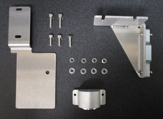
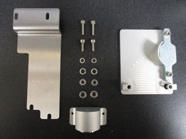

Purpose
Instructions to install magnetic latches on the Universal Fluid Drawer and the Waste Drawer.
The following Panther System SN's are affected by magnetic latches:
| Serial Number | Type of Magnetic Latch | Waster Drawer | Universal Fluid Drawer |
|---|---|---|---|
| 00001–00099 | No latches possible | Frame/chassis does not accommodate magnetic latch hardware | |
| 00100–01936 | Hologic design |
ASY-09018 Lock is on the left of the drawer as you face the Panther |
ASY-09015 |
| 01937 and up | Stratec design | New design cut-in, not available as a spare part | |
| 01937 and up | Stratec design | Lock is on the right of the drawer as you face the Panther |
Lock is on the left of the drawer as you face the Panther |
Parts and Materials Required
 Assembly, Panther, UFD Magnetic Latch
Assembly, Panther, UFD Magnetic Latch

- Assembly, Panther, Waste Drawer Magnetic Latch

- Loctite 242
- Panther Tool Kit
- Proper PPE
Time Required
60 minutes
Procedure

|
Note—Apply Loctite 242 to all screws used in this procedure. |
 button at the top of the page to send feedback, comments, or change requests.
button at the top of the page to send feedback, comments, or change requests.